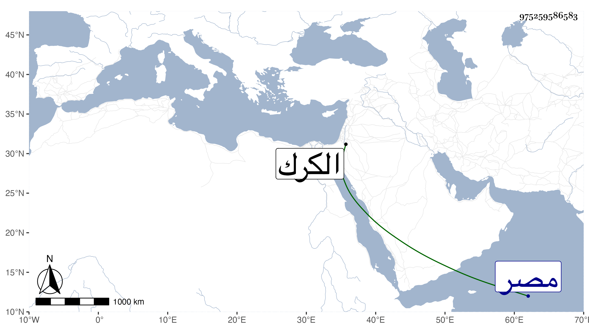

0902Sakhawi.DawLamic.ITO20230111-ara1.EIS1600.975259586583
Biography ID: 975259586583
340
حاجي بن الاشرف شعبان بن حسين بن الناصر محمد بن قلاوون ، استقر في السلطنة بعد أخيه المنصور على وهو ابن نيف على عشر سنين ، ولقب بالصالح ثم انفصل بعد سنة ونصف وخمسة عشر يوما بمدبر مملكته الأتابك برقوق في رمضان سنة أربع وثمانين وسبعمائة وأمره باقامته في داره بقلعة الجبل جريا على عادة بني الأسياد إلى أن خلع الظاهر برقوق وسجن بقلعة الكرك فأعيد ثانيا وغير الصالح لقبه بالمنصور كأخيه ، وكان يلبغا الناصري مدبر مملكته حينئذ بل هو السلطان في الحقيقة فأقام دون تسعة أشهر وعاد الظاهر بعد خلعه له ودخلا مصر في صفر سنة اثنتين وتسعين وسبعمائة ، واستمر المنصور ملازما لداره إلى أن مات ، وقد زاد على الأربعين في تاسع عشر شوال سنة أربع عشرة بعد أن تعطلت حركة يديه ورجليه منذ سنين ، ودفن بتربة جدته خوند بركة أم الاشرف شعبان ، قال العيني كان شديد البأس على جواريه لسوء خلقه من غلبة السوداء غير منفك عن الاشتغال باللهو والسكر ، ذكره شيخنا .
